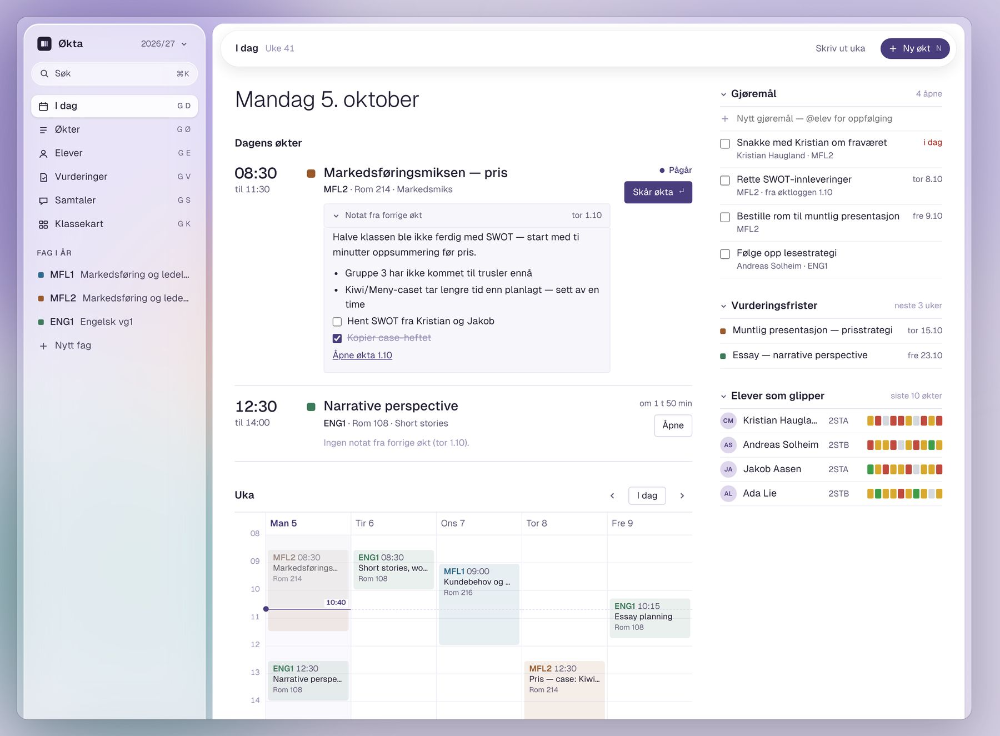
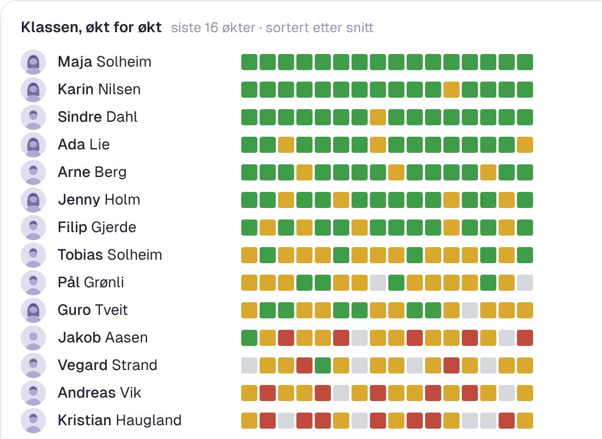
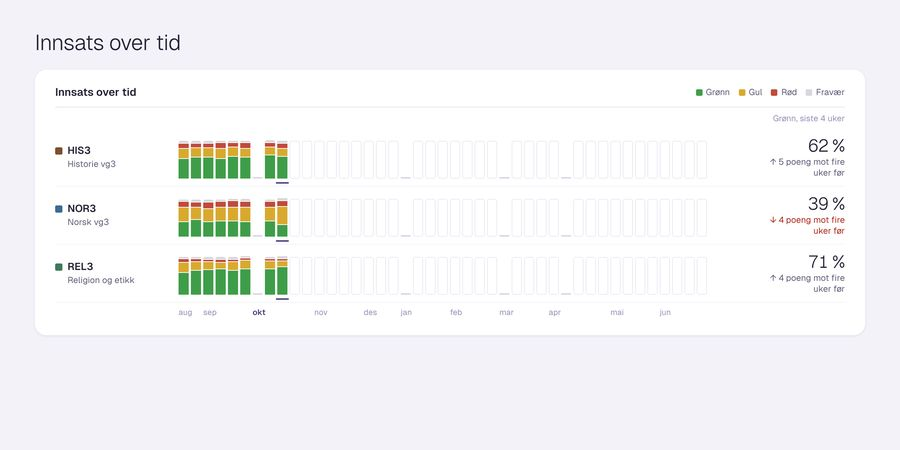
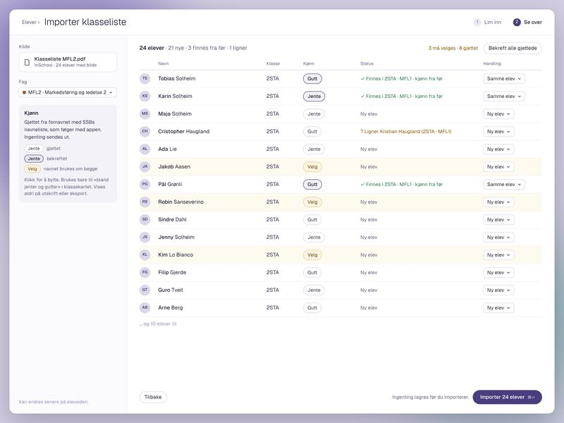

Klassekart og elevgrupper
Generer, stokk om, lås og del opp.
Økta er et verktøy for kjerneoppgavene du som lærer gjør hver dag. Planlegg og loggfør på ett sted, så blir oppfølgingen enklere.
Ingen konto · Alt lagres på din maskin

Skåring
Skår elevene på innsats i økta, og legg til et notat fra hver økt.


Oversikt
Hver skåring havner i oversikten for faget: hele klassen, økt for økt. Et mer skreddersydd regneark som hjelper deg med å følge opp den enkelte elev, og sette standpunkt, når den tid kommer.
Elevkortet
Elevens innsats i alle fagene dine, vurderinger og loggene dine fra økter og samtaler. Alltid ett søk unna.
Kristian Haugland
Innsats gjennom året
Åpent for Kristian
Vurderinger
Planlegging
Planlegg hele året og hver enkelt økt på ett sted. Del øktene inn i perioder, og knytt dem til kompetansemålene.
Generer, stokk om, lås og del opp.
Generer tidspunkter, og eksporter tabellen til læringsplattformen din.
Elevene abonnerer på kalenderen (iCal) og får agendaen rett i sin egen kalender.

Slipp inn PDF-en med klasselista, så leser Økta inn elevene for deg.
Personvern
Ingen konto, ingen sky. Alt ligger i én fil på maskinen din.
Last ned
Versjon 0.4.0 · macOS 13 eller nyere · Apple-chip og Intel
Første gang du åpner: Dra Økta til Programmer. Appen er ikke signert ennå, så første gang stopper macOS den: åpne Systeminnstillinger › Personvern og sikkerhet, og velg «Åpne likevel».
Versjon 0.4.0 · Windows 10 og 11, 64-bit
Første gang du åpner: Kjør installasjonen. Viser Windows en blå advarsel, velger du «Mer informasjon» og «Kjør likevel».
Finner du ikke svaret? Bruk «Gi tilbakemelding» i appen.
I én fil på maskinen din. Ingenting lastes opp. Vil du ta sikkerhetskopi, kopierer du fila eller eksporterer et oppsett.
Økta er foreløpig gratis å bruke for alle lærere.